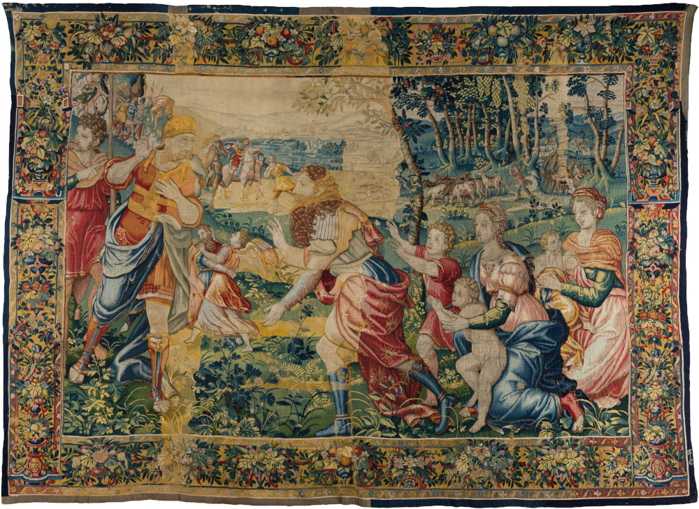
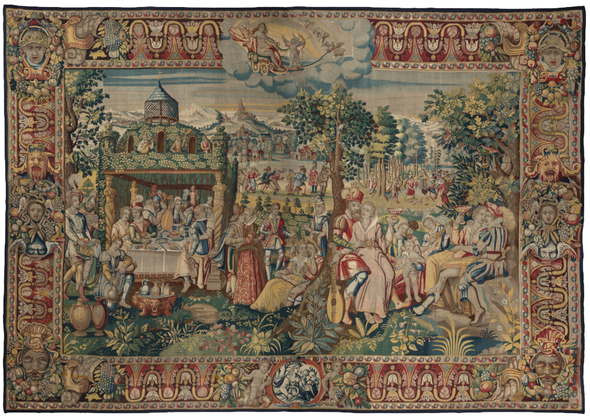
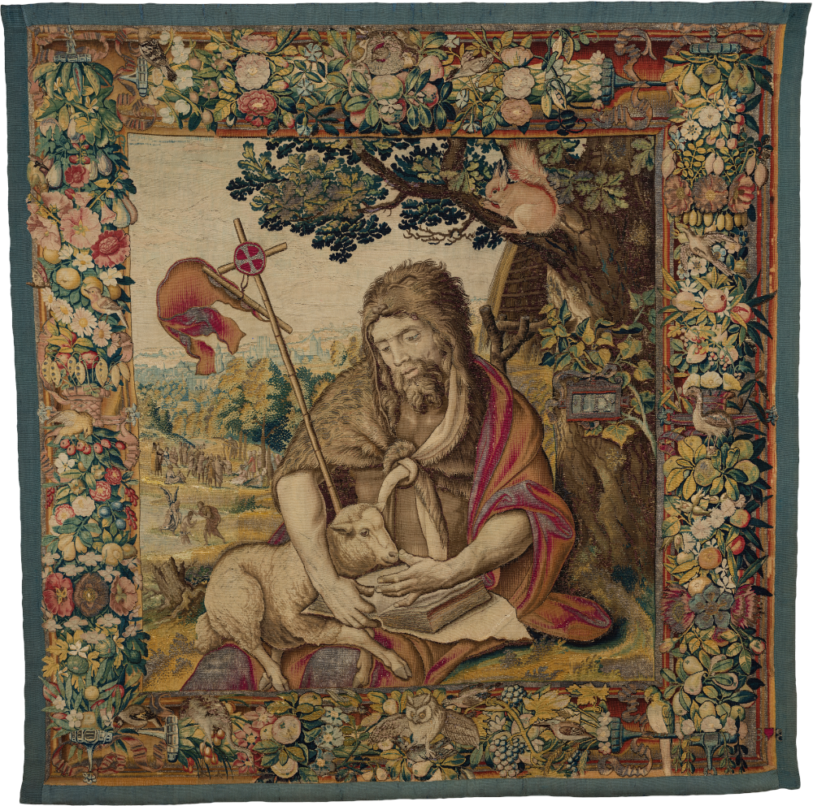

Тканое великолепие
EN
О проекта
История шпалерного ткачества
«Триумф Славы»
О шпалере
Серия шпалер «Триумфы Петрарки»
Исследование и реставрация
Одежды и мода
Растения и птицы
«Триумф Надежды»
О шпалере
Серия шпалер «Триумф семи Добродетелей»
Исследование и реставрация
История костюма
Растения и птицы
«Иоанн Креститель»
О шпалере
Исследование и реставрация
Растения и птицы
Приемы шпалерного ткачества
«Встреча Исава и Иакова»
О шпалере
Серия шпалер «История Иакова»
Исследование и реставрация
Растения и птицы
История костюма
Компьютерная реконструкция
«Триумф Помпея»
О шпалере
Серия шпалер «История Помпея Великого»
Исследование и реставрация
Растения и птицы
История костюма
«Дети Венеры»
О шпалере
Шпалеры «Дети Венеры»
Исследование и реставрация
Растения и птицы
История костюма
Тема «детей Венеры» в разных видах искусств
Глоссарий
Над проектом работали
Партнеры и участники проекта
Квесты и квизы
Шпалеры в Москве и МО
Назад на сайт Отдела реставрации


